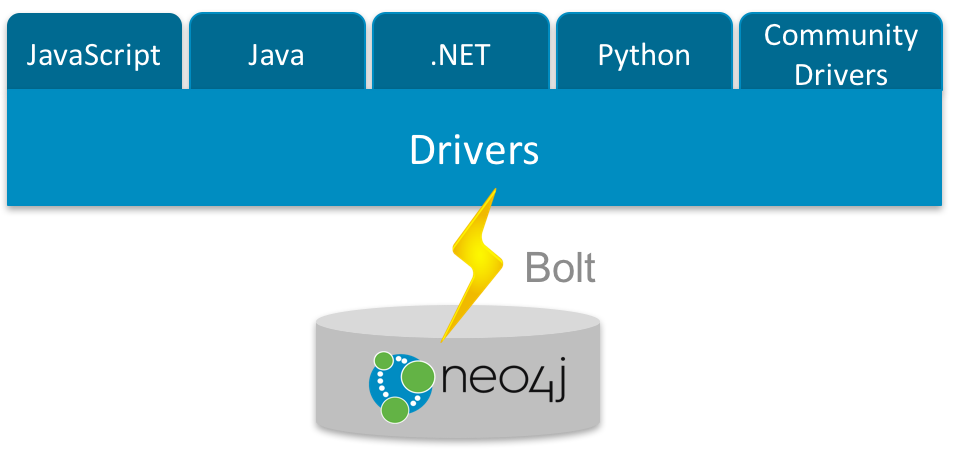
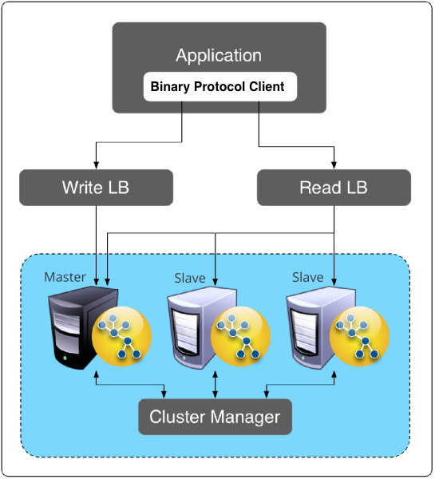
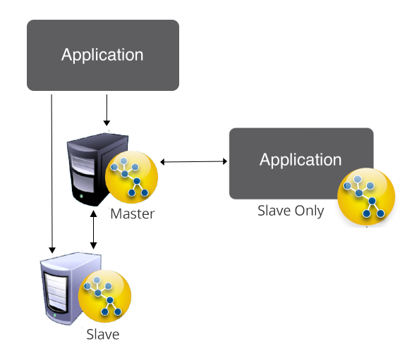
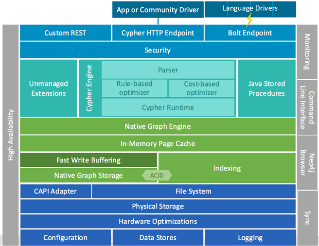
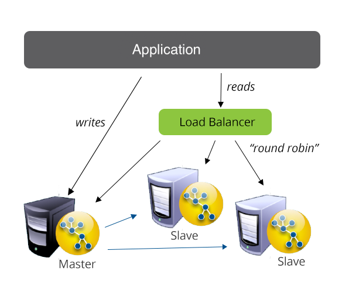
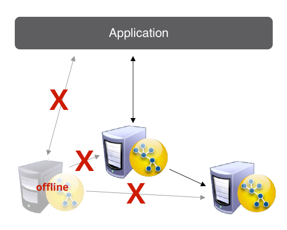
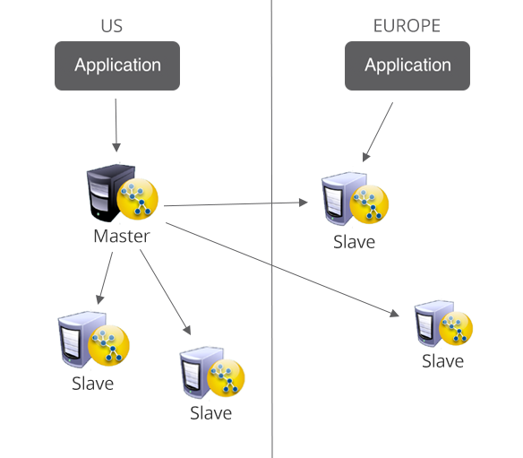
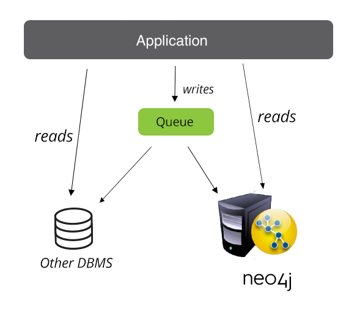
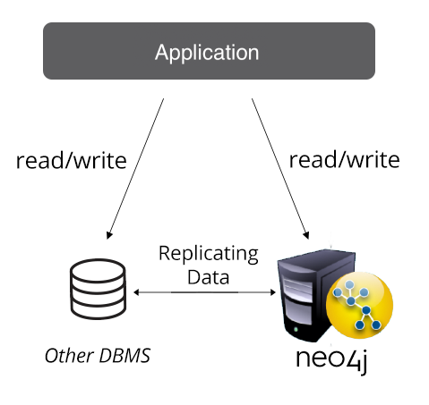

About this Course
Neo4j is in use in thousands of deployments around the world.
Through this course we will provide you the knowledge necessary to successfully deploy and manage a Neo4j production setup.
The Lessons
Lesson 1: Neo4j Production Deployment Options
Lesson 2: Neo4j Server Basics
Lesson 3: Enterprise Edition and Clustering
Lesson 4: Production Administration
Lesson 5: Guidance and Best Practices
Feedback
We created an online version of our classroom production training to satisfy the requests we got for self-paced learning.
Please give us feedback on how we can improve it.
You can also join the neo4j-users Slack and give or get feedback in the #online-training channel.
Neo4j Certification
If you sucessfully completed the course and built and deployed a Neo4j installation into production, please also take the Neo4j Certification to demonstrate your expertise. The certification is free of charge and consists of an hour-long exam with 80 questions across the different aspects of Neo4j usage and deployment.
Course Highlights and Welcome
Welcome to Neo4j in Production
Congratulations!
We’re excited to hear you are ready to join the thousands of other Neo4j users who have successfully deployed Neo4j to production. Like the others before you, you likely have questions about best practices, how to administer the server, what to configure, or even the basic deployment architecture. In addition, it is likely you are an admin who has been tasked with deploying Neo4j for the first time.
Not to worry. We’ve helped many Neo4j users and admins take their applications to production. This course will jump into many of the details you’ll need to know to deploy Neo4j in production, namely focusing on:
- Making Architectural Choices
- Planning for Robustness and Resiliency
- Monitoring and Management
- Best Practices for a Successful Launch
At the end of this course, you will have the necessary knowledge to help your team decide on an appropriate edition of Neo4j, make a wise choice on deployment architectures and be prepared for production launch.
L1: Neo4j Production Deployment Options
(L1) — (Neo4j Application Architecture)
As a database, Neo4j has a very familiar place in all application architectures. It is used as a transactional, real-time store for highly connected data.
You connect to Neo4j from your application via the binary "Bolt" protocol, which is supported by the official language drivers. Currently the drivers for .Net, Java, JavaScript, and Python are officially supported with other languages (e.g. PHP, Go, C/C++) being covered by community drivers.

To interact with the database, you use the open Cypher graph query language. By sending one or more statements across the wire within each transaction you can read, create and update graph data and access additional features.
Built-in and user defined procedures provide support for additional functionality.
For production deployments, Neo4j can be run in clustered mode to support high availability and disaster recovery scenarios. Then it also support live-backups and advanced monitoring.
You can run Neo4j in a variety of different setups, here some examples:
- Single application using Neo4j as primary database
- Graph heavy end user application backed by a Neo4j cluster as first database
- Existing application augmented with new functionality with Neo4j integrated and synced with other DBMS
- Neo4j as backing storage of cloud-hosted MicroServices, e.g. for recommendation or fraud detection
- Standalone Neo4j for graph-analytics in business intelligence
- Integration of Neo4j with graph compute solutions like Apache Spark, Apache Flink or Giraph
(L1) — (Neo4j Editions)
Neo4j Editions: Community and Enterprise
Your First Decision
As you get started with Neo4j, you’ll immediately find there are two versions of Neo4j to choose from: Community Edition and Enterprise Edition. The version you use will depend on the features you require, the nature of the solution using Neo4j, and the level of professional support you would like to receive from Neo Technology.
Community Edition
The Community Edition is a full functioning version of Neo4j suitable for single instance deployments. It has full support for key Neo4j features, such as ACID compliance, Cypher and access via the binary protocol and HTTP APIs. It is ideal for smaller internal or do-it-yourself projects that do not require high levels of scaling or professional services and support.
Enterprise Edition
The Enterprise Edition extends the functionality of the Community Edition to include key features for performance and scalability such as a clustering architecture for High Availability and online backup functionality. It is the right choice for production systems with availability requirements or needs for scaling up or out.
| Edition | Enterprise | Community |
|---|---|---|
HTTP/HTTPS API |
X |
X |
Property Graph Model |
X |
X |
Native Graph Processing & Storage |
X |
X |
ACID |
X |
X |
Cypher - Graph Query Language |
X |
X |
Binary Protocol |
X |
X |
Official Language Drivers |
X |
X |
User Defined Procedures |
X |
X |
High-Performance Native API |
X |
X |
| Edition | Enterprise | Community |
|---|---|---|
Advanced Monitoring |
X |
- |
Enterprise Lock Manager |
X |
- |
Clustering |
X |
- |
Live Backups |
X |
- |
Production Deployable Versions
When you visit the download page or look on our source code repository, you’ll find different versions and candidates identified by
- Milestone (M##),
- Release Candidate (RC#) or
- General Availability releases (GA or often only indicated by the version number such as 3.0.3)
Milestone
Milestone indicates a build of Neo4j that includes new features and functionalities to be included in a future GA release.
Release Candidate
Release Candidate indicates a build that has combined all milestone feature updates and fixes into a single build that could potentially be complete, but needs further testing.
General Availability
General Availability releases are our certified releases. They include all features and functionalities intended for that version and supported for production deployments.
| Production Deployments Should Only Use General Availability Releases |
As the Neo Technology team builds new features and functionalities for the next releases of Neo4j, we will make those features available in Milestone or Release Candidate versions. We do so to give the community an opportunity to test new features before they become a part of our General Availability versions.
Milestone or Release Candidate versions should never be used for your production deployment.
| Also, data migration between non GA versions is unsupported. |
However, Milestone and Release Candidate versions offer a great opportunity for Neo4j administrators to test new versions with their applications. This allows administrators to understand any improvements or effects a coming feature change will have on them.
As feasible, we recommend administrators that they download and test the Milestone releases only in their test environments. But we strongly request waiting for the General Availability version before using Neo4j in a production environment.
(L1) — (Which edition to use?)
Which Neo4j edition is Right for your Deployment?
Community Edition
The Neo4j Community Edition is a great choice for many basic implementations of Neo4j. Indeed, you’ll likely begin your initial exploration of Neo4j with the Community Edition.
Some scenarios where the Community Edition is the right choice:
- You are learning Neo4j and just getting started
- Your solution is built for an internal team that isn’t expecting it to always be available
- Your application is available to external users, but you do not provide any guarantees on uptime or availability
- Your solution doesn’t have high demands for scalability or concurrent access
Enterprise Edition
The Neo4j Enterprise Edition is built for mission-critical applications that require:
- The ability to scale up or scale out your solution with the clustering architecture
- A High Availability deployment that provides strong guarantees on uptime
- Ability to support disaster recovery architectures
- 24x7 availability capabilities
- Professional support from Neo Technology
Enterprise is also the choice if:
- You are using more than four cores (Enterprise lock manager scales beyond four cores)
- You are performing early stage load testing: Enterprise will show better results than Community.
- Workload separation e.g. offloading backups, reporting etc.
The Neo4j Enterprise Edition is designed to meet the demands of mission-critical applications. It provides the features and tools necessary to help you ensure your services are continuously available. The Enterprise Edition is a great choice in these types of scenarios:
- You are deploying Neo4j for your recommendation Engine on your 24x7 e-commerce site
- Neo4j is your database for your internal IT network impact analysis system
- Neo4j is enabling your fraud detection services for your financial transaction network
- Your application needs to scale to 100s of concurrent users or support high volumes of read activity
Our rules of thumb are simple:
- Both editions offer the same great core graph database capabilities
- Go with Enterprise Edition if you are working on a commercial solution, a business critical solution or if you anticipate needing scalability, redundancy or high availability
Startup Program
For companies in the start-up stage we offer a dedicated program which makes free and heavily discounted Enterprise Edition licenses available to you.
Please check for the current terms of the startup program.
(L1) — (General Deployment Options)
Early in the development of a solution, a decision will be made whether to deploy Neo4j as a standalone server or embedded within the solution.
Today the standard deployment of Neo4j is a typical client-server model, the most common approach among production deployments of Neo4j.
For other reasons the choice to embed Neo4j directly into the application may have been made. This is more common in OEM setups, where Neo4j runs integrated as part of a third party product.
Server Mode Deployments
In this architecture, Neo4j runs as a database server and can be accessed through binary and http APIs for data querying and updating. It is a very familiar option similar to many server-based solutions.

Key Advantages of Server Mode
- Binary "Bolt" Protocol or HTTP APIs allowing clients to send requests and receive responses over the wire
- Platform Independence for the client/application accessing the server APIs due to dedicated language drivers
- Server and Query language extensions via user defined procedures
- Independent management of the database from the application
- Easy configuration and provisioning of Neo4j instances
For the Administrator
When deployed as a server, the administrator should expect to perform many common admin, configuration, and troubleshooting tasks as they would for any database deployment. Neo4j provides utilities and tools for enabling these capabilities, which we will detail further in this course. We will also detail the configuration and setup guidance that will aid the admin in ensuring a robust and stable deployment.
This course will primarily emphasize the production decisions and administrative tasks associated with a server-mode deployment.
Mixed Mode: Server and Embedded
Mixed mode is exactly as it sounds: a combination of both embedded and server-based deployments of Neo4j in your architecture. Two conditions must be fulfilled for this to be applicable:
- The mixed-mode instances are clustered with each other. If they are not clustered together, you simply have two different deployment architectures for two different databases.
- You are using Enterprise Edition for both; it is not possible to cluster with Community Edition

Examples of reasons for mixed deployments
- In a cluster of embedded Neo4j instances, deploying a Neo4j instance in server mode for reporting purposes
- In a cluster of server mode Neo4j instances, deploying an embedded instance in a custom built departmental application that leverages the global graph data
There are no unique administrative approaches or requirements when you have a mixed-mode deployment. We highlight it here simply to identify the possibility and note the reasons why this architecture may be chosen.
(L1) — (Summary)
So we’ve made it through the first part of this course. Here’s what you now know about your Neo4j production deployment:
- You understand the basic architecture of applications deployed with Neo4j
- You know whether you are going to use Community or Enterprise edition
- You know to never use a Milestone or Release Candidate in production
- But you also know you can test Milestone and Release Candidates in a test environment to see how all the new features and functionalities work with your existing solution
- You understand the architectural deployment options
Now we’ll turn to Neo4j itself and give you the knowledge you need to understand the server and its functions.
As mentioned previously, much of the following content will detail tools and utilities that are available to administrators of Neo4j instances running in Server mode.
We recommend reviewing the Neo4j documentation for specific details on configuring embedded deployments.
L2: Neo4j Server Basics
Next we turn to a discussion on the fundamentals and internals of Neo4j. These are important topics to fully understand the overall Neo4j framework, how it runs and what is required for Neo4j to be managed.
This section covers:
- Specific knowledge of the Neo4j server including how to manage memory and data
- Basic steps for deploying Neo4j
- Common configuration tasks and knowledge
- How to get an instance running
(L2) — (Neo4j Component Architecture)
Before we deploy, let’s dive into the components that make up a complete Neo4j instance. The internal components that make up a Neo4j instance are helpful to know so you better understand how implementation and configuration details affect the overall system.

Neo4j is comprised of a very familiar component architecture. It includes the files on disk that represent the database and logs for transactions, a cache for storing and working on data in memory, a transaction manager and an interface layer (query or API) for interacting with the database. Let’s look at each level separately.
Data on Disk - Neo4j Database Files
Neo4j database files are persisted to storage for long-term durability.
All the data related database files are persisted in the directory specified by the configuration parameters dbms.directories.data and dbms.active_database in the file conf/neo4j.conf.
If you leave the parameter’s defaults in place, the database at the location data/databases/graph.db will be used.
The below table will give you an idea of the type of files you’ll find, prefaced with neostore.* and what data they are storing.
| Files | Description |
|---|---|
|
Stores index related label data from your graph |
|
Stores node related data from your graph |
|
Stores data related to the relationships created and defined in your graph |
|
Stores the key/value properties from your database |
Each of the files in this directory will make up your database.
Since Neo4j is a schema-less database, we use fixed record lengths to persist data and follow offsets in these files to know how to fetch data to answer queries.
The following table illustrates the fixed sizes Neo4j uses for the type of Java objects being stored.
Those fixed sizes may differ with regards to the record format (standard format vs. high limit format, see the configuration parameter dbms.record_format).
| Store File | Record size - standard | Record size - high limit | Contents |
|---|---|---|---|
neostore.nodestore.db |
15B |
16B |
Nodes |
neostore.relationshipstore.db |
34B |
32B |
Relationships |
neostore.propertystore.db |
41 B |
48 B |
Properties for nodes and relationships (up to 4 per record) |
neostore.propertystore.db.strings |
128 B |
128 B |
Long String properties (configurable record size) |
neostore.propertystore.db.arrays |
128 B |
128 B |
Large array properties (configurable record size) |
You can approximate the size of your database on disk by multiplying the number of nodes, relationships, and properties by the record sizes used for each. This will only be an approximation but can be very helpful when it comes to the hardware sizing. Also, this will have an impact on the size of the page cache, which you should configure properly. The cache and its configuration are discussed in more detail in the next section (L2).
Logging in Neo4j
Relevant database information and errors are logged to $NEO4J_HOME/logs/neo4j.log.
More detailed diagnostics, error messages and forensics are logged to $NEO4J_HOME/logs/debug.log.
Both files are rotated after reaching a certain, configurable size and time.
To get more detailed information about the memory allocation behavior you can enable Garbage Collection Logging, which is explained in a Garbage Collection Logging.
For diagnostics on query performance it is possible to log Cypher queries that are slower that a configurable time to a $NEO4J_HOME/logs/query.log file.
If necessary parameters for those queries can be configured to be logged as well.
Please note that for large amounts and sizes of parameters that can cause the log file to grow quickly.
The same is possible for http requests, which can be configured to be logged to $NEO4J_HOME/logs/http.log
- Logging in the Neo4j Operations Manual
- Logging Settings
Transaction Management in Neo4j
In order to fully maintain data integrity and ensure good transactional behavior, Neo4j supports the ACID properties:
- Atomicity: If any part of a transaction fails, the database state is left unchanged.
- Consistency: Any transaction will leave the database in a consistent state.
- Isolation: During a transaction, modified data cannot be accessed by other operations.
- Durability: The DBMS can always recover the results of a committed transaction.
Specifically:
- All database operations that access the graph, indexes, or the schema must be performed in a transaction.
-
The default isolation level is
read committed. - Data retrieved by traversals is not protected from modification by other transactions.
- Non-repeatable reads may occur (i.e., only write locks are acquired and held until the end of the transaction).
- You can manually acquire write locks on nodes and relationships to achieve higher levels of isolation (SERIALIZABLE).
- Locks are acquired at the Node and Relationship level.
- Deadlock detection is built into the core transaction management.
For production deployment purposes, much of the transaction management is outside the scope of this training.
Query and API Interfaces
Neo4j provides a query language called Cypher and a set of APIs for CRUD operations with the database.
Cypher is a declarative graph query language that allows for expressive and efficient querying and updating of the graph store. Cypher is a relatively simple but powerful language. Very complicated database queries can easily be expressed through Cypher. Although outside the scope of this training, it is recommended that everyone working with Neo4j learns the basic Cypher syntax. It is highly efficient in regard to querying the database for data validation and other checks.
Neo4j also provides Java APIs for database operations, which will most frequently be used when the database is embedded or if authoring Neo4j unmanaged extensions. The documentation provides a complete overview of the APIs, but further details are outside the scope of this training.
References
(L2) — (Cache)
Neo4j provides a built in cache called page cache. This is a file buffer cache and caches the storage file data in the same format as it is stored on the durable storage media. It is also sometimes referred to by the name file buffer cache.
Page Cache
The page cache is designed to be off heap and holds the Neo4j data (or parts of it) in the same format as it is represented on the durable storage media. The purpose of this cache layer is to improve both read and write performance.
The file buffer cache improves write performance by writing to the cache and deferring durable writes. This behavior is safe since all transactions are always durably written to the transaction log, which can be used to recover the store files in the event of a crash. It also improves write performance by batching up many small writes into fewer page-sized writes.
Since the file buffer cache is caching the contents of the store files, you can calculate the appropriate size for it by summing up the space usage of all the store files. For instance, on a posix system you can estimate the total size by running the following command in a terminal:
$ du -hc *store.db*
Run this command in the directory where your store files are located (see above for configuring this). It will output the summed up size of the store files relevant for the page cache. Add an appropriate value for growth (e.g. 20%).
If you configure the file buffer cache to have less memory than the size of the store, the cache will automatically swap pages in and out on demand, trying to keep the most frequently used data in memory.
Configuration
| Parameter | Possible Values | Effect |
|---|---|---|
|
|
If set to |
|
The maximum amount of memory to use for the page cache, either in bytes, or greater byte-like units, such as 100m for 100 mega-bytes, or 4g for 4 giga-bytes. |
The amount of memory to use for mapping the store files, in a unit of bytes. This will automatically be rounded down to the nearest whole page. This value cannot be zero. For extremely small and memory constrained deployments, it is recommended to still reserve at least a couple megabytes for the page cache. |
Note: the prefix unsupported means that the config parameter is not part of the official product surface and therefore not officially supported.
When configuring the amount of memory allowed to use for the page cache and the JVM heap, make sure to leave room for the operating system’s page cache and other programs and services the system might want to run. It is important to configure the memory usage so that the Neo4j JVM process won’t need to use any swap memory, as this will cause significant performance degradation.
When reading the configuration parameters on startup, Neo4j will automatically configure the parameters that are not specified. The default cache size will be configured based on the available memory on the computer, with the assumption that the machine is dedicated to running Neo4j. Specifically, Neo4j will look at how much available memory the machine has, subtract the JVM max heap allocation from that, and then use 50% of what is left for the page cache. This is considered the default configuration.
A Note about Memory Management
In future releases of Neo4j, the product may see changes in allocation and use of memory which will improve the overall experience. Please refer to the documentation and release notes for releases you are planning to use to confirm changes in memory management.
(L2) — (Server Deployment Options)
Now that we understand the basic components that comprise Neo4j, let’s turn to our discussion to deployment and configuration.
Where to Deploy?
You can deploy Neo4j in your own data center, in the Amazon cloud or using Rackspace, just to name a few possibilities. There are various other ways to deploy your services. Often the decision to choose the right deployment model is made by you and your organization together with other involved companies or IT partners. Subjects often discussed during decision-making include cost, data privacy, availability constraints and response times.
For Neo4j, the decision is purely based on your own requirements. Neo4j can be deployed in your data center, in a hosted service or a combination of both (if using Clustering with Enterprise Edition).
Hardware Considerations
The most common-sense minimum requirement is that your hardware choices should reflect the demands of your application.
For highly concurrent or low-latency read requirements:
- Try to acquire hardware with more physical memory to increase the amount of the database that can be cached, and the ratio of cache hits when data is queried.
- Consider hardware with higher core counts so more threads can execute on data in parallel.
This will reduce the time the database spends accessing data from disk.
For high-volume write transaction requirements:
- Hardware with better disk speeds (or SSD) will provide higher overall throughput
- Minimize the amount of system services contention by considering dedicated hardware for Neo4j
Of course, if your application has a combination of both requirements, you should consider a mix of the suggestions above. Overall, the saying "bigger is better" applies here.
Virtualization, Containers, other?
The popularity of virtualization solutions such as VMWare and container solutions such as Docker are commonly discussed when considering production deployment. While we won’t discuss all possible scenarios and options here, we can confirm that Neo4j can be deployed in these solutions with the following considerations:
- Neo4j heavily utilizes both memory and disk while running, so you’ll want to ensure your deployment has an adequate number of system services dedicated to it to achieve the performance you require.
- Contention for services and swapping on a system can cause worse performance than on an undersized system. Avoid oversubscribing the systems where Neo4j will be deployed.
- Neo4j deployments are capable of starting and running with minimal configuration. However, you’ll likely still need to touch each system where Neo4j will be deployed for final configurations.
Minimum Requirements
Lastly, Neo4j does have a basic set of minimum requirements that must be present:
-
Java: Oracle or OpenJDK
- Neo4j 2.3.0 or higher: JDK 8
- Neo4j 2.2.x or lower: JDK 7
- ext4 or similarly formatted filesystem
- Minimum 10GB SATA disk (with recommendation for higher performance disks)
- 2GB Memory
- Intel Core i3 CPU
(L2) — (Basic Neo4j Configuration)
The default configuration of Neo4j will likely not be completely sufficient for your application’s workload. Neo4j will do a considerable amount of self management, such as adjusting the amount of memory used, but it should still be reviewed and adjusted for application requirements. There are two important configuration files in which you may want to adjust some parameters. These files are discussed in the following section.
Neo4j Configuration Files
| Purpose | File |
|---|---|
JVM Configuration |
|
Neo4j (services and kernel) Configuration |
|
Database Configuration
File: conf/neo4j.conf
Neo4j has a range of configuration and performance tuning options that are available.
You will want to familiarize yourself with the values set in this configuration file. Although the defaults are sensible, administrators might choose to make changes (especially to the port settings).
The following is a list of configuration parameters you should consider tuning for your initial deployment.
| Parameter | Comments |
|---|---|
|
These are the configurations that allow you to define webservices port and SSL settings. |
|
If you are upgrading a current Neo4j database, you will want to uncomment this parameter (set it to true) so that the underlying database files are upgraded to the version of the database you are deploying. Please consult the release notes, the documentation or the Neo4j support team for confirmation of supported upgrade paths. |
|
Defines how long logical transaction logs will be maintained on the server. The more days or volume of logs kept, the more disk space will be utilized by this feature. Later in the training, we will discuss the impact this configuration has on backup strategies. |
|
Neo4j can be enabled to allow access from a remote terminal client for operations on the database. If this is needed/desirable for production data validation, consider enabling remote shell access with these configurations. However, note that this does pose a security risk to your database if not properly controlled. |
|
The maximum amount of memory to use for the page cache, either in bytes, or greater byte-like units, such as 100m for 100 mega-bytes, or 4g for 4 giga-bytes. |
|
Path of the data directory. You must not configure more than one Neo4j installation to use the same data directory. |
|
Name of the database to load.
A directory with that name will be created under the path specified by |
|
Whether basic authentication is enabled or not. |
For Enterprise Edition users, it is also possible to configure online backup and clustering (HA) settings, which will be discussed later in this training.
JVM Configuration
File: conf/neo4j-wrapper.conf
When running Neo4j as a server, it will start an instance of the Java Virtual Machine to run.
In the file neo4j-wrapper.conf, JVM and heap memory related parameters that are passed to the JVM when starting are configured.
For your initial deployment, consider reviewing the following parameters.
| Parameter | Comments |
|---|---|
|
Use the G1 Garbage Collector. For most applications, this setting will be sufficient. |
|
Set the heap memory in megabytes used by Neo4j is allocating for internal processing. It’s recommended to set both options to the same value. Note that the memory used by the page cache is not part of JVM heap. |
For Enterprise customers, it is also possible to enable detailed JVM metrics and remote JMX monitoring for remote inspection. We will discuss this in a later section.
(L2) — (Installing and Running Neo4j)
Before You Get Started
You will find the Neo4j installation files location at https://neo4j.com/download/other-releases/.
Make sure your target system meets the current minimum requirements, including a JVM with the correct version.
Getting Neo4j installed and started can be done in less than a minute. The video below will walk you through doing so in a Mac environment. Please consult the documentation for installing in a Windows environment.
Installing Neo4j 3
Download the version of Neo4j you want to run from: https://neo4j.com/download/other-releases/
For the Enterprise Edition, always install Oracle JDK 8 or OpenJDK 8 first and then register, download and unzip the enterprise version.
For Windows and MacOS X Community Edition, Desktop installers which come with a bundled version of the Java Runtime Environment are available.
The zipped download is also available for the Community Edition for all operating systems. There is also a debian package available for Debian and Ubuntu Linux distribution.
An easy way to use Neo4j is via the official Docker image, both for Enterprise and Community. The Docker image comes with many configuration options detailed in the documentation and can also run in a clustered setup.
Start Neo4j via the Desktop application or bin/neo4j start.
After the database has started, you can access the Neo4j Browser database web interface at the listed URL (in most cases http://localhost:7474).
For detailed installation instructions, please refer to the documentation.
Server commands
|
Comment |
|
Start Neo4j server in the background, it may take a bit until the endpoints become available |
|
Stop Neo4j server |
|
Restart Neo4j server |
|
Display Neo4j status |
|
Start Neo4j in the foreground, write messages to stdout |
(L2) — (Summary)
You’ve now made it to the point where we are ready to begin discussing more advanced production deployment configurations and how to manage and troubleshoot the system once it is in production. Before moving on, let’s recap what we now know:
- All the fundamentals about Neo4j editions, when you would choose which and the general deployment options
- The component architecture of Neo4j
- How Neo4j operates and the use of memory
- Where the appropriate configuration files exist and the set of parameters that should absolutely be reviewed before going into production
- How to run a copy of Neo4j in your environment
L3: Enterprise Edition and Clustering
(L3) — (Why Cluster?)
When designing your solution, some of your first considerations will concern your functional requirements and the type of technology choices you make to meet them. Some of those functional requirements likely will include a need to scale to many concurrent users, maintain consistent uptime, or be able to recover from a system failure and maintain availability. These important production-related questions should drive your technical decisions. This may result in choosing to cluster Neo4j.
This section introduces:
- Clustering
- Read Scalability
- High Availability
- Disaster Recovery
- Analytics
(L3) — (Cluster: Read Scalability)
As the title suggests, clustering Neo4j allows you to distribute read workload across a number of Neo4j instances. You can take two approaches while scaling your reads with Neo4j: (a) distribute and load balance reads to any slave instance in the cluster, or (b) distribute direct reads to specific instances in the cluster.
Distribute and load balance reads to any slave instance in the cluster
Neo4j’s clustering architecture replicates the entire database to each instance in your cluster. As a result, you are able to direct any read from your application to any slave instance without much concern for data locality.
When would you choose this method?
- You need to scale up the number of concurrent read requests
- Your data has no natural or obvious way of partitioning reads
- A significant portion of the data that needs to be read can reasonably be expected to already be in memory on any instance in the cluster

Distribute direct reads to specific instances in the cluster
Distributing direct reads to specific instances in the cluster is sometimes referred to as "cache-based partitioning". The strategy simply allows you to take advantage of natural partitions in your data to direct reads to particular instances where the system will already have those datasets in memory. This approach is particularly useful when your total active dataset is much larger than can fit in memory in any particular instance.
When would you choose this method?
- Your total active data set is larger than can reasonably be expected to fit in memory in any single instance in your cluster
- A natural or obvious partition can be identified in your dataset
- You have the application and operations ability to direct which instances are read from
(L3) — (Cluster: High Availability)
How do you know if you need Neo4j’s clustering for High Availability reasons?
Disaster recovery features are required for enterprise environments. If your enterprise has the following features, your enterprise is a good candidate for clustering:
- Neo4j serves data for a critical business or consumer facing solution or component that would impact the ability of the company to conduct business if the component were down
- Data is dependent on various global end-users with limited predictability of when they’ll be accessing the system

A significant and fundamental requirement for most production services or applications is overall availability. Very often this is determined by the demands of the users, the times they would be interacting with the solution, the impact downtime would have on the business or users of the system to complete their roles or the financial impact of a system failure. These aren’t always customer-facing solutions and can be critical internal systems.
Availability can often be addressed with various strategies for recovery or mirroring. However, Neo4j’s clustering architecture is an automated solution to ensure Neo4j is consistently available for your application and end-users.
(L3) — (Cluster: Disaster Recovery)
Disaster recovery, in general terms, defines your ability to recover from major outages of your services. The most common example is an outage of a whole datacenter, which results in many services being disrupted. In these cases, a disaster recovery strategy can define a failover datacenter along with a strategy for bringing services back online.
Neo4j Clustering can accommodate disaster recovery strategies that require very short windows of downtime or low tolerances for data loss in disaster scenarios. By deploying a cluster instance to an alternate location, you have an active copy of your database up and available in your designated disaster recovery location that is consistently keeping up with the transactions against your database.
Why would you choose Clustering in support of Disaster Recovery?
- Minimize Downtime: Your application availability demands are very high and you cannot sustain significant periods of downtime
- Require Real-Time: You already employ a disaster recovery strategy for other application or service components that are near real-time
- Minimize Data Loss: You have a large database that changes frequently and has low tolerance for data loss in a disaster scenario
(L3) — (Cluster: Analytics)
Your application needs to access data for its purposes. It reads data, writes data, and generally keeps your application service or end-users happy. Then comes the analytics team that wants to collect and aggregate data for their reports. Next thing you know, you have a set of long-running compute queries running against your production databases and disrupting your service or end-users' happiness.
You can’t avoid servicing the needs of the analytics requests, but you can limit the impact their queries have on your service. Neo4j Clustering can be used to include separate instances entirely in support of query analytics, either from end users or from BI tools. Clustering means the data is always up to date for analytics queries as well.
When would you decide to use Clustering to support analytics needs?
- You have regular BI users that consistently need to run analytics against the most recent versions of the data
- Your analytics includes queries that aggregate over large or entire sets of data
- Your analytics processes include complex compute algorithms for predictive or modeling purposes
(L3) — (Cluster to save yourself)
We’ve looked at some logically sound reasons to cluster Neo4j:
- Read scalability
- High availability
- Disaster Recovery
- Analytics
But there is another sound reason not listed: saving your bacon.
Clustering offers many advantages for your deployments:
- It’s an automatic, real-time backup of your database
- It can help assure additional data durability in the cluster
- You have an automatic failover solution without the need to invest in backup, redeploy and restart scripts and tools
- You can support the ad hoc data requests without service impacts
Clustering Neo4j will support many of the functional application requirements that demand application uptime and consistency. Now let’s turn to a discussion on Neo4j’s clustering basics and how to deploy it.
(L3) — (Neo4j Cluster Basics)
Neo4j clustering is comprised of a single Master instance and zero or more Slave instances. All instances in the cluster have full copies of your data in their local database files. Each database instance contains the logic needed to coordinate with the other members of the cluster for data replication and election management.
Please note that you need a trusted network to run your Neo4j cluster as currently the network communication is not encrypted.
When performing a write transaction on a slave, each write operation will be synchronized with the master (locks will be acquired on both master and slave). When the transaction commits it will first be committed on the master and then if successful, on the slave. To ensure consistency, a slave has to be up to date with the master before performing a write operation. This is built into the communication protocol between the slave and master so that updates will be applied automatically to a slave communicating with its master.
Write transactions performed directly through the master will execute in the same way as running in normal non-HA mode. Upon success, the transaction will be pushed out to a configurable number of slaves (default one slave). This is done optimistically, meaning if the push fails, the transaction will still be successful. It’s also possible to configure the push factor to 0 for higher write performance when writing directly through the master, although this increases the risk of losing any transactions not yet pulled by another slave if the master goes down.
Slaves can also be configured to pull updates asynchronously by setting the ha.pull_interval option.
Whenever a Neo4j database becomes unavailable, the other database instances in the cluster will detect that and mark it as temporarily failed. A database instance that becomes available after being unavailable will automatically catch up with the cluster. If the master goes down, another member will be elected and switched from slave to master after a quorum has been reached within the cluster. When the new master has performed its role switch, it will broadcast its availability to all other members of the cluster. Normally a new master is elected and started within just a few seconds. During this time, no writes can take place (the writes will block or in rare cases, throw an exception). The only time this is not true is when an old master had changes that weren’t replicated to any other member before becoming unavailable. If the new master is elected and performs changes before the old master recovers, there will be two "branches" of the database after the point where the old master became unavailable. The old master will move away its database (its "branch") and download a full copy from the new master to become available as a slave in the cluster.
In summary:
- Write transactions can be performed on any database instance in a cluster.
- Neo4j HA is fault tolerant and can continue to operate from any number of machines down to a single machine.
- Slaves will be automatically synchronized with the master on write operations.
- If the master fails, a new master will be elected automatically.
- The cluster automatically handles instances becoming unavailable (for example due to network issues) and also makes sure to accept them as members in the cluster when they are available again.
- Transactions are atomic, consistent and durable but eventually propagated out to other slaves.
- Updates to slaves are eventually consistent by nature but can be configured to be pushed optimistically from the master during commit.
- If the master goes down, any running write transactions will be rolled back and new transactions will block or fail until a new master has become available.
- Reads are highly available and able to handle read load scales with more database instances in the cluster.
(L3) — (Setting up a Cluster)
The video below will walk you through a simple setup of a local cluster. Setting up a cluster involves the basic following steps:
- Installing each cluster instance
- Configuring Neo4j for clustering on each instance
- Starting up each cluster instance
Creating Local Cluster on a single server
Let’s set up a cluster with all instances of Neo4j on the same machine. This type of configuration is useful in development and testing environments.
Download and install Neo4j Enterprise into three different directories:
~/neo4j-01 ~/neo4j-02 ~/neo4j-03
(L3) — (Graph LAB: Cluster in Action)
(L3) — (Summary)
Clustering is a very important topic for many enterprise deployments. Throughout this section, we’ve discussed the various reasons for Clustering Neo4j and how you’d go about it. At this point, you are ready to discuss some final administration topics, including how to maintain your system once it is in production.
Let’s recap what we’ve learned up to this point:
- The groundwork for Neo4j, components, editions, and configurations
- Your deployment options
- How to scale your Neo4j deployment to meet Enterprise demands
- Clustering a Neo4j instance
L4: Production Administration
Neo4j supports common monitoring and administration tasks you will need for assuring long run success of your deployment. Whether you need to secure access, administer the database or implement a backup routine, this is the right section for you.
This section covers:
- Monitoring
- Authentication and Basic Security
- Backup and Restore
(L4) — (Monitoring Neo4j)
Neo4j provides access to internal data through a number of means, giving you the ability to directly access and monitor the state of a single instance or a cluster of multiple instances. This data can provide details on the state of an instance, the volume and measurements of data, the number of operations, memory management and much more. In this section we’ll describe the various data points you can retrieve from Neo4j’s internal monitoring options.
Metrics Extension
Starting in Neo4j 2.3 Enterprise Edition a monitoring extension was added, that reports a large number of metrics from Neo4j, for example:
- Detailed transaciton metrics
- Cluster status and events
- Network metrics
- Log rotation events and timing
- Page-Cache and Checkpointing events
- Record-Id usage
- JVM memory
- Bolt & Cypher processing information
The metrics extension can be configured to report to Graphite and log to CSV files.
A full list can be found in the operations manual.
You can enable all metrics or certain aspects:
| Setting | Comment |
|---|---|
metrics.enabled=true |
enabling all metrics |
metrics.neo4j.enabled=true |
enabling all Neo4j specific metrics |
metrics.neo4j.tx.enabled=true |
metrics about transactions; number of transactions started, committed, etc. |
metrics.neo4j.pagecache.enabled=true |
page cache: page faults, evictions, flushes and exceptions, etc. |
metrics.neo4j.counts.enabled=true |
entities are in the database; nodes, relationships, properties, etc. |
metrics.neo4j.network.enabled=true |
network usage of the HA cluster component |
| Setting | Comment |
|---|---|
metrics.graphite.enabled=true |
default is 'false' |
metrics.graphite.server=<ip>:2003 |
metrics.graphite.interval=5s |
how often to send data, defaults to 3s |
metrics.prefix=neo1 |
Neo4j instance name, e.g. wwwneo1 |
|
metrics.csv.enabled=true |
default is 'false' |
metrics.csv.path=file or directory path |
defaults to "metrics/" in the store directory |
metrics.csv.interval=5s |
how often to store data, defaults to 3s |
Exercise: Enable Metrics
- Enable all metrics in your Neo4j cluster
- Configure the metrics extension to log to CSV files
- Restart slaves and master
-
Run a number of read and write queries from the northwind guide
:play northwind graph -
Watch the configured metrics log-file (e.g. with
tail -f $NEO4J_HOME/metrics/*.csv)
Java Managment Extension (JMX)
Neo4j has been supporting JMX for a long, time.
You can use established tools such as JConsole or other application monitoring solutions to view this data and proactively respond to issues.
Sincle Neo4j 3.0 there is also a dbms.queryJMX() procedure that allows you to query
==== JMX Monitoring on localhost
With the Neo4j database running, you should already be able to connect your monitoring tool to the process which is running Neo4j.
Depending on the Neo4j edition you are using, the name of the process (e.g. shown in JConsole) is: org.neo4j.server.enterprise.EnterpriseEntryPoint or org.neo4j.server.CommunityEntryPoint.
When using JConsole, just pick the Neo4j process which should be shown in the Local Process list and click connect.
You may need to confirm using an insecure connection in order to proceed.
For this test setup on a local host should be fine.
Exercise: JMX
- Open JConsole and connect to Neo4j
-
Run a number of read and write queries from the northwind guide
:play northwind graph - Introspect the different MBean attribute values and charts provided by the JVM and Neo4j
-
Interact with the JVM by triggering a Garbage Collection in the
java.lang → MemoryMBean -
Interact with Neo4j by triggering a
dumpAllin theorg.neo4j → kernel#0 → DiagnosticsMBean
Remote JMX Monitoring
By default, the Neo4j Enterprise Server edition does not allow remote JMX connections, since the relevant parameters in the conf/neo4j-wrapper.conf configuration file are commented out.
To enable this feature, you have to remove the # characters from the various com.sun.management.jmxremote parameters there.
When commented in, the default values are set up to allow remote JMX connections with certain roles.
Refer to the conf/jmx.password, conf/jmx.access and conf/neo4j-wrapper.conf files for details.
A simple configuration for conf/jmx.access could be:
# Define a role called 'monitor' with readonly access: monitor readonly
And in conf/jmx.password one could define:
# Define the password for the 'monitor' role to be 'Neo4j', please change this: monitor Neo4j
Make sure that the file conf/jmx.password has the correct file permissions on the file system level.
The owner of the file has to be the user that will run the service and the permissions should be read only for that user.
On Unix systems, this is 0600.
On Windows, follow the tutorial to set the correct permissions.
If you are running the service under the Local System Account, the user that owns the file and has access to it should be SYSTEM.
Note: you may want to update the permissions and/or ownership of the conf/jmx.password and conf/jmx.access files.
Refer to the relevant section in conf/neo4j-wrapper.conf for details.
With this setup, you should be able to connect to the JMX monitoring of the Neo4j server using <IP-OF-SERVER>:3637, with the username monitor and the password Neo4j.
What to monitor
One example is to monitor the state of data replicated between two instances in a cluster.
The difference between the LastCommittedTxId attribute on each instance will give you an idea of how much lag there is between your master instance and any of your slave instances.
Of course, if you are using a Enterprise Application Monitoring tool, you can define a threshold of lag as an alarm condition.
References
(L4) — (Authentication and Basic Security)
Authentication
Neo4j has built-in authentication capabilities. By default, authentication is turned on so that users and client programs need to provide the correct credentials in order to gain access to the database. This is true for accessing the database via the Neo4j browser, the REST endpoints (both the built in endpoints and your own extensions) or any Neo4j client and connector.
The default credentials are neo4j:neo4j. The password needs to be changed at first access.
Do that by opening the Neo4j browser; you will be asked to change the password.
Note: access to the database will only be granted if the default password has been changed.
The authentication data, which includes the username and the encrypted password, is stored in the file dbms/auth which is located in your data directory.
The default is data/dbms/auth.
You will find one line in that file per user.
If necessary, this file can be copied to other Neo4j instances to ensure they share the same username/password combinations.
Authentication can be disabled.
Doing so will allow any client to access the database without supplying authentication credentials.
If you have other security measures in place and want to disable it, set the following parameter to false in the file conf/neo4j.conf:
# disable authentication dbms.security.auth_enabled=false
Note: the authentication is implemented within the Neo4j server and does not affect the file system layer. I.e., the store files are accessible without providing the above-mentioned credentials no matter if authentication is turned on or off.
General Security: Locking down Neo4j
For production deployments we recommend disabling any unused entry points to minimize risk for unauthorized access.
(L4) — (Backup and Restore)
For Neo4j Enterprise customers, Neo4j provides a backup utility that can produce full and incremental backups of your current working database. Neo4j backups are fully functioning copies of the Neo4j data store, which makes restoring data as easy as copying your backup files to the correct directory in your Neo4j instance. This also makes creating a backup with the Community edition easy as you only need to take a full copy of your current database store files when Neo4j is not running. In this section we’ll discuss these options in more detail.
Backing up Neo4j
As described earlier, the graph.db folder is where the Neo4j database files reside.
These files are completely portable between instances of Neo4j without requiring any specific conversion or format tools.
This also makes backing up Neo4j a very trivial task for administrators.
Community Edition
Backing up the Community Edition requires simply making a copy of the graph.db folder as it exists in the state you’d like to back up.
The Neo4j Community Edition does not provide any tools or capabilities to back up a running instance of the Neo4j Community Edition.
The following is a simple process for backing up the Community Edition:
- Pause or stop all application level and end-user database interactions
- Stop the Neo4j instance
-
Copy the
graph.dbfolder to a location you identify as your backup directory - Start the Neo4j instance
- Resume all services that have been paused or stopped in step 1
We recommend identifying a strategy for labeling and retaining only necessary backup copies of your database We also suggest automating a routine to take regular backups.
Enterprise Edition
The Enterprise Edition of Neo4j provides backup capabilities that allow for an online backup of your database, meaning you do not need to pause your application and shut down your Neo4j instance(s) to create a backup.
The utility neo4j-backup is shipped with the Enterprise Edition and provides an interface for performing backups.
When backing up, the utility will automatically determine whether to take a full or incremental backup of your database. A full backup is exactly what it sounds like, a complete copy of the database. Of course, the duration needed to create a full copy depends on the amount of data you have in your database.
In contrast, an incremental backup will copy and apply the transactions from the last backup only. I.e. the duration for backing up depends on the amount of data that has been changed between the last backup and now. Incremental backups can be taken by Neo4j if two things are true:
- An existing backup directory is specified where an existing backup exists.
- All transactions in the Neo4j logs are still present in the Neo4j instance (i.e. the logs have not rolled over).
Configuring an instance for backup
Backups are enabled by default. If you do not change the corresponding configuration parameters, you should already be able to trigger backups from your local machine where the Neo4j server is running.
However, you may want to change the backup configuration in the conf/neo4j.conf file.
To enable or disable the backup functionality, use the parameter dbms.backup.enabled. Set it to true or false.
The interface and port the backup service listens on is configured via the parameter dbms.backup.address and defaults to the loopback interface and port 6362.
It is typical to reconfigure this to listen on an external interface by setting dbms.backup.address=:6362.
It can also be configured to listen on all interfaces by setting dbms.backup.address=0.0.0.0:6362.
This can be useful when remote backups shall be performed.
Note: make sure you do not violate any security rules already in place for your setup by allowing remote backups.
Taking a backup:
From a Neo4j instance, run the neo4j-backup tool from the bin directory specifying the Neo4j instance configured to run backups and the target directory for your backup.
Example:
./bin/neo4j-backup -host localhost -to /mnt/backup/neo4j-backup
The backup tool will automatically determine if an incremental backup can be performed. If yes, it will do so. Otherwise a full backup is started.
Remember that the ability to perform an incremental backup is dependent upon the availability of the transactions in the logs since your last backup.
You can tweak this time by changing the dbms.tx_log.rotation.retention_policy parameter in the conf/neo4j.conf file.
Backup Strategies
With the Enterprise Edition, you have the ability to define a backup strategy that is efficient and robust. We have some basic guidelines for ensuring an efficient backup process:
- Your backup strategy should reflect your tolerance for data loss. Should a catastrophic system failure happen days after your last backup, the potential loss of 5 days of transaction data shouldn’t be a concern. If it is, you need a backup strategy that is significantly more frequent.
- Your target directory, or copies of your backup, should be archived to a location or system off of your primary Neo4j instances.
- If you have even a moderate transaction volume application, it is recommended to take frequent incremental backups (perhaps hourly) throughout the day and employ a strategy of taking a full backup on a longer interval.
Restoring Neo4j
Restoring Neo4j couldn’t be simpler. As mentioned previously, backups of the database are fully functional copies that can be redeployed simply by moving the copies to the target Neo4j instance.
Should you need to recover with a Neo4j backup, we recommend the following steps:
- Stop the currently running Neo4j instance. If recovering for a cluster, stop all instances in the cluster.
- Assure any issues, errors, or misconfigurations with the server are resolved.
- Move the backup copy from the backup directory to the graph.db folder on the target Neo4j instance.
- Restart Neo4j and if working in a cluster, restart the additional cluster instances after the instance you started with the backup becomes operational.
References
(L4) — (Additional Administration Tips)
Late night phone calls on a Friday to notify you of a service failure rarely kick off an exciting weekend. The following are some additional administration practices that provide sage advice for production stability.
JVM Memory Management
When using the JVM, one needs to think about the garbage collection process that comes with the JVM. Garbage collection can have various unpredictable impacts on your production system, especially when Neo4j is deployed in a cluster and the GC pauses are indistinguishable from an application failure. Here are tips for you to minimize the impact JVM Memory Management can have on your application.
-
If possible, configure the amount of memory allocated to the JVM to be slightly larger than the size of your database.
JVM memory settings are configured in the
neo4j-wrapper.confconfiguration file. -
Depending on your workload, you may find more predictable memory management using an alternate garbage collector.
The G1 garbage collector is configured by default.
However, alternatives may prove better for your workload.
This is also configured in the
neo4j-wrapper.confconfiguration file. - Benchmark and test real production workloads against your test environment. Under-configuration of memory settings will quickly overwhelm an untested production environment. Do not skip this step and do not test in production.
Garbage Collection Logging
For debug and problem resolution purposes, you should consider enabling Garbage Collector (GC) logging.
In the file neo4j.conf you may want to uncomment the following lines to enable garbage collection logging:
dbms.logs.gc.enabled=true dbms.logs.gc.options=-XX:+PrintGCDetails -XX:+PrintGCDateStamps -XX:+PrintGCApplicationStoppedTime -XX:+PrintPromotionFailure -XX:+PrintTenuringDistribution
Once you have GC logging enabled, additional files will be created in your logs/ directory.
The gc log files follow the naming pattern gc.log.x.current where x is increasing.
There you can find details about the GC happening on your system regarding the JVM process which runs the Neo4j server.
Under regular workload you’ll get an idea of the impact GC is having. The most significant impact you are looking for is "full" garbage collections. A full GC is a stop-the-world event and will cause Neo4j to be unresponsive to requests. You can search the log specifically looking for the keyword "Full" to determine whether this is happening to your system. If so, you should consider further tuning your memory configurations to minimize the number of full GC’s.
Logical Transaction Log Files
You rarely need to touch or manage the log files with Neo4j. That being said, let’s discuss a few things to consider regarding log files.
First, you should use the configuration settings in Neo4j to instruct the server how long to retain log files.
This is configured in the neo4j.conf file by setting the dbms.tx_log.rotation.retention_policy parameter.
The value on the right side is a string which must be true/false or of format '<number><optional unit> <type>'. For example, 100M size for limiting logical log space on disk to 100Mb, or 200k txs for limiting the number of transactions to keep to 200 000.
It defaults to 7 days.
You should never set this to true as it will keep all logs indefinitely and you will eventually run out of disk space.
If your system has ample disk space available and moderate transaction volumes, you may want to consider setting a time-based policy coupled with a backup procedure that ensures you are taking incremental backups in that window. If your system will have limited disk space and/or high transaction volumes, you should consider a volume-based setting and a backup procedure taking frequent incremental backups to an alternate directory.
(L4) — (Summary)
You now have the production knowledge to successfully administer and monitor your deployment of Neo4j. With the conclusion of this section, you have the beginning-to-end steps now. Let’s quickly recap what we learned:
- The basics of Neo4j editions and server components
- How Neo4j runs and how to configure it
- How to deploy Neo4j and scale the server for Enterprise or Demanding workloads
- How you will manage the deployment once it is live
Throughout the training we’ve touched on a number of best practices related to potential application characteristics or environment requirements. In the next section we’ll finish our training by providing a complete picture through solution architecture guidance and best practices.
L5: Guidance and Best Practices
(L5) — (Geographic Distribution)
There are generally a few reasons you may want to choose to geographically distribute a Neo4j implementation.
- You’d like to bring the Neo4j data closer to the end user, especially if you have a global user population and end-user application response time is critical
- Geographic deployments can be used to provide disaster recovery capabilities
- Different regions require different access patterns or security practices
The Neo4j Enterprise Edition with a clustered deployment can seamlessly support a geographically distributed cluster meeting your requirements.

Within the cluster, the master instance will still service all writes for the entire global cluster.
Each region has a slave instance(s) that can support localized reads.
Important!
In these configurations, the slave instances should be configured to pull its replication data from the master on a longer interval (assuring efficient use of bandwidth and message bundling) and set as ha.slave_only in the cluster so it can never be elected master.
Otherwise, a geographically distributed slave instance could unintentionally be elected master and be too far from the intended application updates.
In this setup, you may still want to distribute writes to the master, even if the request is coming from a location within Europe. An alternative would be to send writes to a slave within Europe, which in turn would need to communicate with the master in the US region. Both the bandwidth and the cluster configuration (push/pull strategy) should be taken into consideration for both paths in order to decide on the best solution for your setup.
(L5) — (Multi-System Integration)
Multiple database backend systems are a common setup in today’s modern Enterprise architectures. In general, there are two common practices we recommend taking into consideration while designing your application architecture:
- distributing the transactions in front of the databases or
- replicating data directly between systems
Both approaches will be discussed in this section.
Distributing transactions in front of the database

As the diagram illustrates, this architecture utilizes a service (such as a message queue) between the application layer and the database services tier. The queue in this example stages data updates for each database system and may also be used by other services or business processes. A secondary service then processes each update on each target system, possibly with a two-phase commit-like approach, to assure the data is updated in each location.
This approach is flexible in data processing and transformation for each database and provides for significant flexibility in growing the architecture and communicating with services. However, it does require more logic between the database tier and the services to ensure updates are processed in all target systems. And you’ll want to ensure you have a routine for random data validation between systems to assure data is not diverging.
Replicating data between systems
A familiar choice for many administrators, this architecture involves an ETL-like process for moving data from one system to another target system.

When Neo4j is the target system, we recommend taking two possible approaches:
- Use a utility or system tool to extract data from the system of record into a CSV format. You can then use the import utilities in Neo4j to transform and load the data directly into the database.
- Using a utility or service, pull the data from the system of record into a format that can then be transformed into transactions that are sent to Neo4j like regular database transactions. In these cases, it is common to see data extracted in a format that can then be transformed into JSON documents and sent in transactions to Neo4j’s REST endpoints.
(L5) — (Multi-tenant Requirements)
If you are considering a deployment where multiple different users will be accessing Neo4j, we have some general guidance for enabling a functional multi-tenant architecture. Currently, Neo4j does not support an in-database functionality that provides data privacy requirements for multi-tenant architectures. However, the following approaches may be applicable for your setup.
Instance per customer
As a JVM-based database, it is possible to run multiple single instances of Neo4j (no cluster) for each system in your architecture. This approach provides the best guarantees for data isolation; it allows you to tune each instance according to the access patterns of that customer(s) and to administer each instance with different SLA’s or policies. However, if you have high availability or similar requirements that imply clustering, the effort to fulfill that within this scenario is higher compared to other setups.
Deployments like this will most likely incorporate a load-balancer or proxy in front of Neo4j that distributes the application requests to the appropriate Neo4j instance based on the end-user of the application.
Sub-groups per instance
You may also want to divide your graph from a modeling perspective. In that case, you would have only one graph version holding all your data. Clustering is easily possible in this setup.
In order to implement this scenario, one could leverage Neo4j Labels to group data within the database or use a separate node per data partition. There are many factors that can be used to divide your graph: user IDs, user groups/teams, geographically/regional parameters or companies, and more.
However, there may be some implications that come with this setup. If you need assistance, you’re welcome to contact us.
Sub-instances per tenant
If the tenants might share a global set of graph data while also having a subset of their own graph data, two general approaches can be taken:
Maintain a global Neo4j instance for global data and deploy tenant-specific instances for tenant data
This approach implies the need for maintaining data access patterns between the global instance and the tenant-specific instances. It may also require more complex application logic to join data at the application tier, as Neo4j does not currently provide tools for distributed queries.
Take a similar approach of a single instance per tenant and incorporate a process for replicating data from the global database to the tenant-specific database
In this case you would not be using Neo4j Clustering. Instead, you would extract data from the global instance, then use the loading tools to load data into the tenant instances. An advantage of this approach is that you can easily maintain your global data in a single place while providing tenant-specific deployments at the same time. The data copied from the global instance can also be a subset of content based on unique tenant variables. This approach also does not require any coordination logic to merge query data from two instances.
(L5) — (Test, test, test!)
Major robustness and performance testing often goes uncompleted before systems go into production. For our last tip, we’ll emphasize what should be an obvious step: Test, test, test!
Functional Tests
Functional tests should be conducted to ensure the application is performing to spec and the returned data matches expectations.
Data Validation Tests
Data validation tests should be conducted if data is replicated between two systems. Random data sampling and comparisons can provide a high degree of confidence in data validity and can be as easy as comparing checksums.
Performance Tests
Test the performance of the system and ensure it is meeting the scale and throughput requirements expected. We recommend testing to at least 10% above what you expect your peak workload to be.
Failover Test
Test failover and fallback scenarios to ensure you know how the system will perform if there are issues.
Conclusion
Congratulations! You are now ready to take your Neo4j application into production!